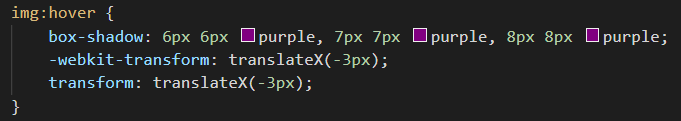

Home | Lucas Cerca | Tabela de curiosidades | Sites favoritos | Descobrindo tags | Contato | Descobrindo propriedades CSS
Nessa página contem as propriedades que são novidades, pesquisadas na internet e utilizadas no projeto.
Para a estilização de uma tag, normalmente utilizo mais de uma propriedade de uma vez, então será mostrado a tag estilizada e as propriedades em seguida.
Todos os textos do site estão estilizados com a propriedade text-shadow, colocando os valores para posicionar e a cor da sombra.
Efeitos de transição: Link. Ao passar o ponteiro do mouse, o link aumenta de tamanho com a pripriedade "transition: all .1s;" o tempo determina a velocidade que o efeito ocorre, sendo mais lento ou rapido.
As cores de fundo do site estão sob o efeito gradiente, a transição de uma cor a outra. "background-image: linear-gradient(to right, white, rgba(49, 193, 212, 0.637));" a indicação para direita com a cor inicial e a proxima cor que vai terminar a transição.
A propriedade "::-webkit-input-placeholder" que permite alterar a cor do texto que fica dentro de um campo de input ""
Exemplo 5
Efeito de sombra com deslocamento da imagem, pode ser feita atraves das propriedades seguintes, que será atribuido a posição de movimentação e as cores do sobreado.
